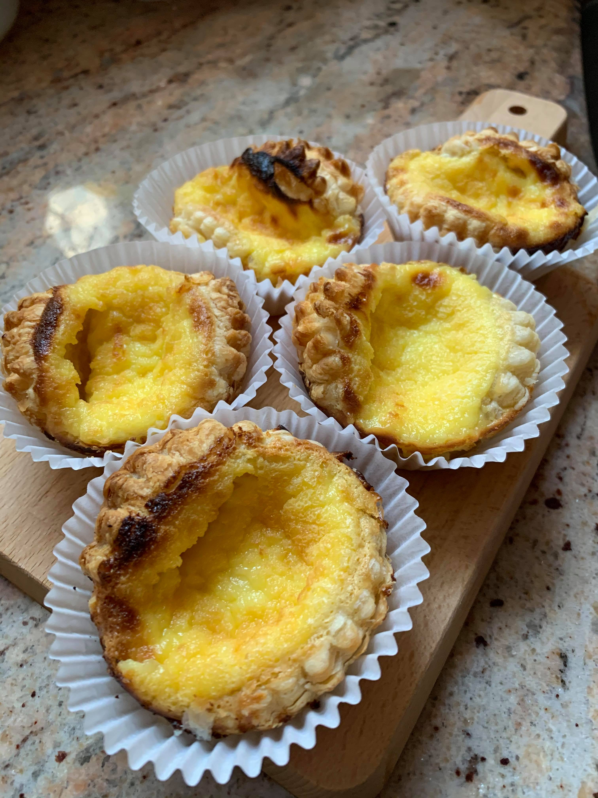

Egg Tart Recipe
Ingredients
- 1 cup confectioners' sugar
- 3 cups all-purpose flour
- 1 cup butter
- 1 egg, beaten
- 1 dash vanilia extract
- 2/3 cup white sugar
- 1 1/2 cups water
- 9 eggs,beaten
- 1 dash vanilia extract
- 1 cup evaporated milk
Directions
Step 1
In a medium bowl, mix together the confectioners' sugar and flour. Mix in butter with a fork until it is in small crumbs. Stir in the egg and vanilla until the mixture forms a dough. The texture should be slightly moist. Add more butter if it is too dry, or more flour, if the dough seems greasy. Shape dough into 1 1/2 inch balls, and press the balls into tart molds so that it covers the bottom, and goes up higher than the sides. Use 2 fingers to shape the edge into an A shape.
Step 2
Preheat the oven to 450 degrees F (230 degrees C). Combine the white sugar and water in a medium saucepan, and bring to a boil. Cook until the sugar is dissolved, remove from heat and cool to room temperature. Strain the eggs through a sieve, and whisk into the sugar mixture. Stir in the evaporated milk and vanilla. Strain the filling through a sieve, and fill the tart shells.
Step 3
Bake for 15 to 20 minutes in the preheated oven, until golden brown, and the filling is puffed up a little bit.
Finished!

Return to recipes!